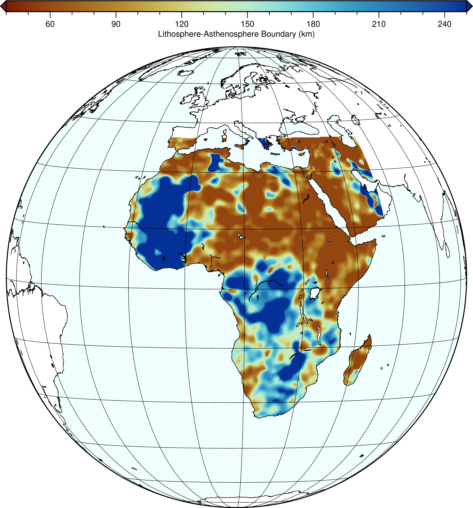

Lithosphere-Asthenosphere Boundary (LAB) Model for Africa

LAB model for the African Plate developed using one of the highest-resolution seismic wave speed models in the region. See Ajala et al. (2025) for details.
[Model Hosted on Zenodo]